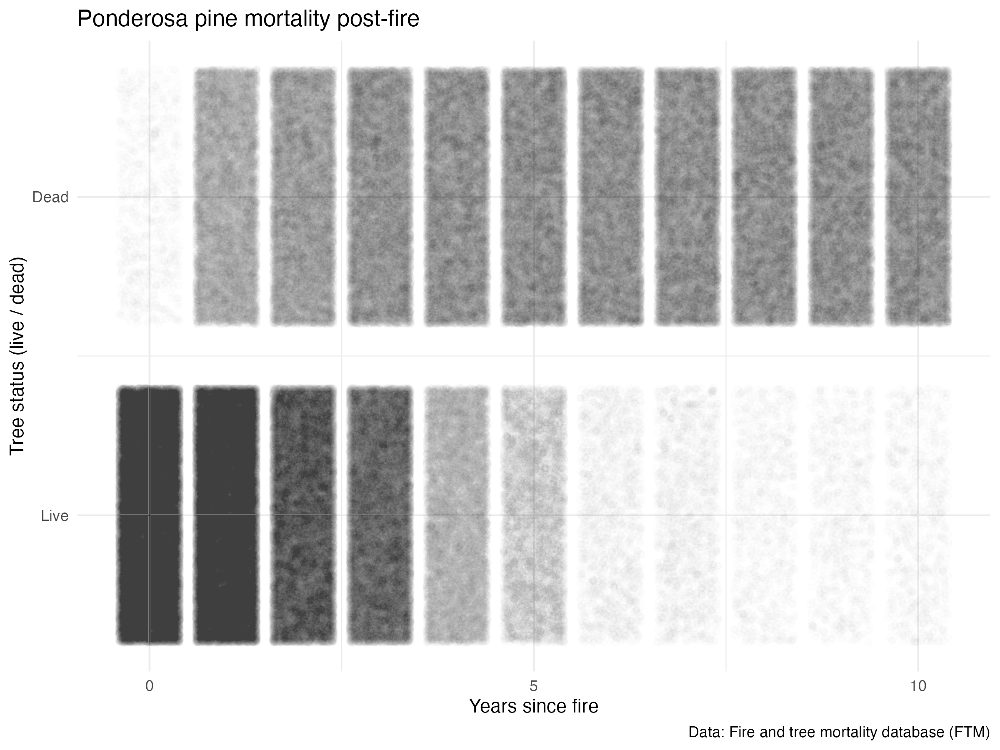
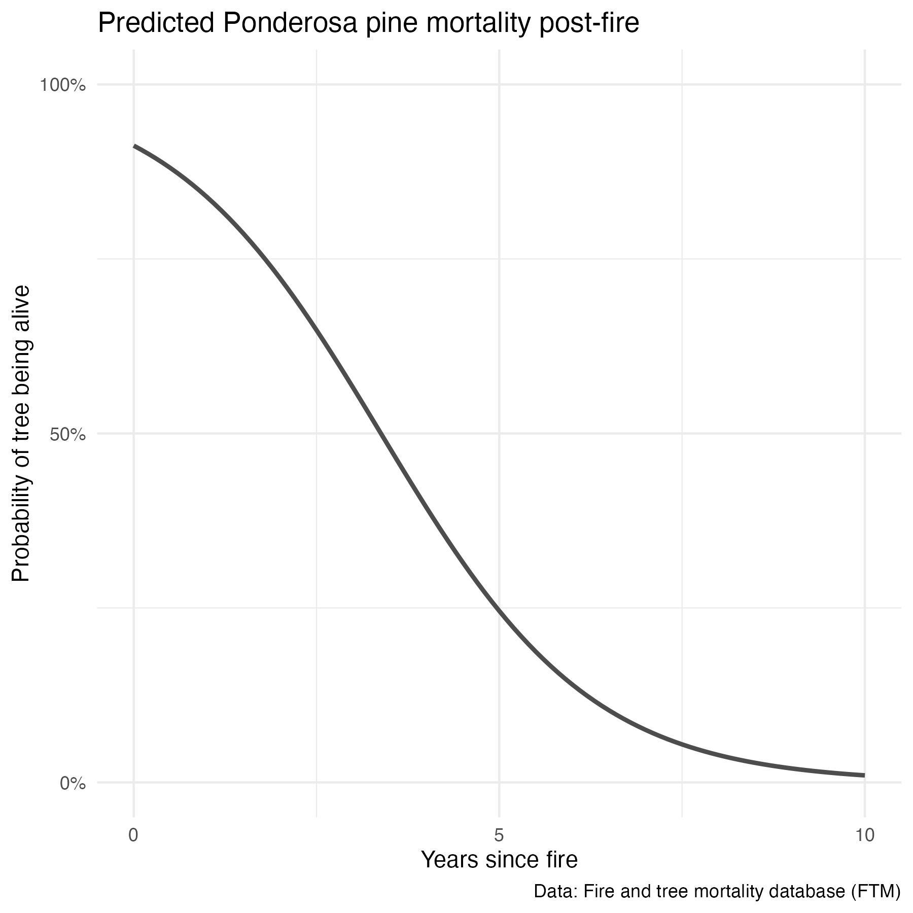

library(tidyverse)
library(here)
library(naniar)
library(tidymodels)
library(geomtextpath)
library(paletteer)Exploring tree outcomes following fires
Overview
Basically, there’s this awesome dataset on tree survival following fires, the Fire and Tree Mortality Database, and I want to go exploring & compare fire survival across species. Some fun with tidymodels, data visualization, binary logistic regression, and my first shot at using the fantastic geomtextpath package!
Citations:
Cansler et al. (2020). Fire and tree mortality database (FTM). Fort Collins, CO: Forest Service Research Data Archive. Updated 24 July 2020. https://doi.org/10.2737/RDS-2020-0001
Cansler et al. (2020). The Fire and Tree Mortality Database, for empirical modeling of individual tree mortality after fire. Scientific Data 7: 194. https://doi.org/10.1038/s41597-020-0522-7
Attach packages & read in the data
trees <- read_csv(here("posts", "2022-03-10-tree-mortality-fires", "data", "Data", "FTM_trees.csv")) # Tree outcomes and recordsImportant information: See attributes in _metadata_RDS-2020-0001.html for variable definitions.
Exploratory data visualization
Counts of tree species in the dataset:
# Find the top 20 most counted tree species
trees <- trees %>%
mutate(sci_name = paste(Genus, Species_name)) %>%
filter(sci_name != "Pinus jeffreyi or ponderosa")
tree_count_top_20 <- trees %>%
count(sci_name) %>%
mutate(sci_name = fct_reorder(sci_name, n)) %>%
slice_max(n, n = 20)
tree_20_gg <- ggplot(data = tree_count_top_20, aes(x = sci_name, y = n)) +
geom_col() +
coord_flip() +
theme_minimal() +
labs(y = "\nObservations in dataset",
x = "Scientific name")
Counts of live (0) and dead (1) for the top 20 most recorded trees in the dataset:
# Make a long form of the trees dataset (top 20 most observed tree species)
trees_long <- trees %>%
pivot_longer(cols = yr0status:yr10status, names_to = "yr_outcome", values_to = "live_dead") %>%
mutate(yr_since_fire = as.numeric(parse_number(yr_outcome)),
live_dead_chr = case_when(
live_dead == 0 ~ "live",
live_dead == 1 ~ "dead"
)) %>%
filter(sci_name %in% tree_count_top_20$sci_name)
trees_live_dead <- trees_long %>%
count(sci_name, yr_since_fire, live_dead_chr) %>%
drop_na()
tree_survival_gg <- ggplot(data = trees_live_dead, aes(x = yr_since_fire, y = n)) +
geom_col(aes(fill = live_dead_chr), position = "fill") +
scale_fill_manual(values = c("lightsalmon", "forestgreen"),
name = "Live / dead:") +
scale_x_continuous(breaks = c(0, 5, 10), labels = c("0", "5", "10")) +
theme_minimal() +
labs(x = "Years since fire",
y = "Proportion live / dead",
title = "Tree survival post-fire",
subtitle = "Only includes the 20 most observed trees in the dataset",
caption = "Data: Fire and tree mortality database (FTM)") +
facet_wrap(~sci_name)We can already see some interesting differences in survival across species. For example, Picea mariana and Abies lasiocarpa experience quick mortality within the first year; others like Pinus jeffreyi and Abies concolor appear more resilient. However, near-complete mortality is observed across all species within 10 years.
Ponderosa pines - diving a bit deeper
Since it is the most observed species in the dataset and because it happens to be one of my favorite trees, I’ll dive a bit deeper into factors that may influence Pinus ponderosa mortality post-fire.
ponderosa <- trees_long %>%
filter(sci_name == "Pinus ponderosa")
# write_csv(ponderosa, here::here("content", "post", "2022-03-10-tree-mortality-fires", "ponderosa.csv"))First, let’s take a look at mortality over time (years since fire):
survival_gg <- ggplot(data = ponderosa, aes(x = yr_since_fire, y = live_dead)) +
geom_jitter(alpha = 0.008) +
labs(x = "Years since fire",
y = "Tree status (live / dead)",
title = "Ponderosa pine mortality post-fire",
caption = "Data: Fire and tree mortality database (FTM)") +
scale_y_continuous(breaks = c(0, 1), labels = c("Live", "Dead")) +
scale_x_continuous(breaks = c(0, 5, 10), labels = c("0", "5", "10")) +
theme_minimal()
Classification: binary logistic regression in tidymodels
Create the training & testing sets
ponderosa <- ponderosa %>%
drop_na(yr_since_fire, live_dead) %>%
mutate(live_dead = as.factor(live_dead))
# Make the training & testing dataset:
ponderosa_split <- ponderosa %>%
initial_split(prop = 4/5)
# Confirm the splits (Analysis/Assess/Total):
ponderosa_split<Training/Testing/Total>
<293297/73325/366622># Extract the training and testing sets:
ponderosa_train <- training(ponderosa_split)
ponderosa_test <- testing(ponderosa_split)
# Check them out a bit:
ponderosa_train %>%
count(yr_since_fire, live_dead)# A tibble: 22 × 3
yr_since_fire live_dead n
<dbl> <fct> <int>
1 0 0 39818
2 0 1 537
3 1 0 38895
4 1 1 10424
5 2 0 26791
6 2 1 12933
7 3 0 23555
8 3 1 14889
9 4 0 8680
10 4 1 15005
# … with 12 more rowsponderosa_test %>%
count(yr_since_fire, live_dead)# A tibble: 22 × 3
yr_since_fire live_dead n
<dbl> <fct> <int>
1 0 0 9851
2 0 1 152
3 1 0 9984
4 1 1 2545
5 2 0 6917
6 2 1 3161
7 3 0 5998
8 3 1 3612
9 4 0 2123
10 4 1 3748
# … with 12 more rowsMake a recipe
# Just using the single predictor here:
ponderosa_recipe <- recipe(live_dead ~ yr_since_fire, data = ponderosa)
ponderosa_recipe Recipe
Inputs:
role #variables
outcome 1
predictor 1Make the model
ponderosa_model <-
logistic_reg() %>%
set_engine("glm") %>%
set_mode("classification") # Binary classificiationMake the workflow
ponderosa_wf <- workflow() %>%
add_recipe(ponderosa_recipe) %>%
add_model(ponderosa_model)Fit the model:
ponderosa_fit <- ponderosa_wf %>%
last_fit(ponderosa_split)
# Which returns high accuracy and roc_auc:
ponderosa_fit %>% collect_metrics()# A tibble: 2 × 4
.metric .estimator .estimate .config
<chr> <chr> <dbl> <chr>
1 accuracy binary 0.808 Preprocessor1_Model1
2 roc_auc binary 0.878 Preprocessor1_Model1Proof of concept: check out the test set predictions
…just for the first 20 rows:
ponderosa_fit %>%
collect_predictions() %>%
head(20)# A tibble: 20 × 7
id .pred_0 .pred_1 .row .pred_class live_dead .config
<chr> <dbl> <dbl> <int> <fct> <fct> <chr>
1 train/test split 0.838 0.162 1 0 1 Preprocessor1_M…
2 train/test split 0.00997 0.990 10 1 1 Preprocessor1_M…
3 train/test split 0.564 0.436 14 0 0 Preprocessor1_M…
4 train/test split 0.564 0.436 28 0 0 Preprocessor1_M…
5 train/test split 0.838 0.162 29 0 1 Preprocessor1_M…
6 train/test split 0.139 0.861 34 1 1 Preprocessor1_M…
7 train/test split 0.0198 0.980 37 1 1 Preprocessor1_M…
8 train/test split 0.721 0.279 41 0 0 Preprocessor1_M…
9 train/test split 0.912 0.0881 43 0 0 Preprocessor1_M…
10 train/test split 0.912 0.0881 47 0 0 Preprocessor1_M…
11 train/test split 0.721 0.279 63 0 0 Preprocessor1_M…
12 train/test split 0.564 0.436 64 0 0 Preprocessor1_M…
13 train/test split 0.0388 0.961 73 1 1 Preprocessor1_M…
14 train/test split 0.0198 0.980 74 1 1 Preprocessor1_M…
15 train/test split 0.912 0.0881 80 0 0 Preprocessor1_M…
16 train/test split 0.564 0.436 83 0 0 Preprocessor1_M…
17 train/test split 0.721 0.279 85 0 1 Preprocessor1_M…
18 train/test split 0.244 0.756 88 1 1 Preprocessor1_M…
19 train/test split 0.0747 0.925 90 1 1 Preprocessor1_M…
20 train/test split 0.838 0.162 94 0 1 Preprocessor1_M…Confusion matrix of truth / predictions
Recall here: 0 = “Live”, 1 = “Dead”
ponderosa_fit %>%
collect_predictions() %>%
conf_mat(truth = live_dead, estimate = .pred_class) Truth
Prediction 0 1
0 32750 9470
1 4641 26464Fit on entire dataset
ponderosa_model_full <- fit(ponderosa_wf, ponderosa)
ponderosa_model_full══ Workflow [trained] ══════════════════════════════════════════════════════════
Preprocessor: Recipe
Model: logistic_reg()
── Preprocessor ────────────────────────────────────────────────────────────────
0 Recipe Steps
── Model ───────────────────────────────────────────────────────────────────────
Call: stats::glm(formula = ..y ~ ., family = stats::binomial, data = data)
Coefficients:
(Intercept) yr_since_fire
-2.3424 0.6929
Degrees of Freedom: 366621 Total (i.e. Null); 366620 Residual
Null Deviance: 508200
Residual Deviance: 318000 AIC: 318000Making new predictions
Let’s say we want to predict survival of other ponderosa pines based solely on years post-fire:
# Make a data frame containing a "yr_since_fire" variable as a new model input:
new_yr <- data.frame(yr_since_fire = c(0, 0.4, 1, 2.2, 5.7, 8.3))
# Then use the model to predict outcomes, bind together:
example_predictions <- data.frame(new_yr, predict(ponderosa_model_full, new_yr))
example_predictions yr_since_fire .pred_class
1 0.0 0
2 0.4 0
3 1.0 0
4 2.2 0
5 5.7 1
6 8.3 1This does seem to align with what we’d expect based on the data visualization. We can also find the probability of “Dead” (outcome = 1) using the model predictions, adding type = "prob" within the predict() function.
predict_over <- data.frame(yr_since_fire = seq(from = 0, to = 10, by = 0.1))
predictions_full <- data.frame(predict_over, predict(ponderosa_model_full, predict_over, type = "prob"))
names(predictions_full) <- c("yr_since_fire", "prob_alive", "prob_dead")
# Plot probability of mortality:
ponderosa_prob_alive <- ggplot() +
geom_line(data = predictions_full, aes(x = yr_since_fire, y = prob_alive), color = "gray30", size = 1) +
labs(x = "Years since fire",
y = "Probability of tree being alive",
title = "Predicted Ponderosa pine mortality post-fire",
caption = "Data: Fire and tree mortality database (FTM)") +
scale_y_continuous(breaks = c(0, 0.5, 1),
labels = c("0%", "50%", "100%"),
limits = c(0, 1)) +
scale_x_continuous(breaks = c(0, 5, 10), labels = c("0", "5", "10")) +
theme_minimal()
Extending the model
I want to extend this model for the 20 most observed trees in the dataset (so will include species as a predictor variable).
Create the training & testing sets
trees_20 <- trees_long %>%
filter(sci_name %in% c(tree_count_top_20$sci_name)) %>%
drop_na(yr_since_fire, live_dead) %>%
mutate(live_dead = as.factor(live_dead))
# Make the training & testing dataset:
trees_20_split <- trees_20 %>%
initial_split(prop = 4/5)
# Confirm the splits (Analysis/Assess/Total):
trees_20_split<Training/Testing/Total>
<830790/207698/1038488># Extract the training and testing sets:
trees_20_train <- training(trees_20_split)
trees_20_test <- testing(trees_20_split)
# Check them out a bit:
trees_20_train %>%
count(yr_since_fire, live_dead)# A tibble: 22 × 3
yr_since_fire live_dead n
<dbl> <fct> <int>
1 0 0 77698
2 0 1 2901
3 1 0 73457
4 1 1 30566
5 2 0 51661
6 2 1 47376
7 3 0 43039
8 3 1 54875
9 4 0 22379
10 4 1 55576
# … with 12 more rowstrees_20_test %>%
count(yr_since_fire, live_dead)# A tibble: 22 × 3
yr_since_fire live_dead n
<dbl> <fct> <int>
1 0 0 19428
2 0 1 753
3 1 0 18306
4 1 1 7628
5 2 0 12875
6 2 1 11690
7 3 0 10922
8 3 1 13593
9 4 0 5647
10 4 1 13867
# … with 12 more rowsMake a recipe
# Just using the single predictor here:
trees_20_recipe <- recipe(live_dead ~ yr_since_fire + sci_name, data = trees_20)
trees_20_recipeRecipe
Inputs:
role #variables
outcome 1
predictor 2Make the model
trees_20_model <-
logistic_reg() %>%
set_engine("glm") %>%
set_mode("classification") # Binary classificiationMake the workflow
trees_20_wf <- workflow() %>%
add_recipe(trees_20_recipe) %>%
add_model(trees_20_model)Fit the model:
trees_20_fit <- trees_20_wf %>%
last_fit(trees_20_split)
# Which returns high accuracy and roc_auc:
trees_20_fit %>% collect_metrics()# A tibble: 2 × 4
.metric .estimator .estimate .config
<chr> <chr> <dbl> <chr>
1 accuracy binary 0.819 Preprocessor1_Model1
2 roc_auc binary 0.892 Preprocessor1_Model1Confusion matrix of truth / predictions
Recall here: 0 = “Live”, 1 = “Dead”
trees_20_fit %>%
collect_predictions() %>%
conf_mat(truth = live_dead, estimate = .pred_class) Truth
Prediction 0 1
0 57437 19934
1 17629 112698Fit on entire dataset
trees_20_model_full <- fit(trees_20_wf, trees_20)
trees_20_model_full══ Workflow [trained] ══════════════════════════════════════════════════════════
Preprocessor: Recipe
Model: logistic_reg()
── Preprocessor ────────────────────────────────────────────────────────────────
0 Recipe Steps
── Model ───────────────────────────────────────────────────────────────────────
Call: stats::glm(formula = ..y ~ ., family = stats::binomial, data = data)
Coefficients:
(Intercept) yr_since_fire
-1.89320 0.61524
sci_nameAbies grandis sci_nameAbies lasiocarpa
0.69818 2.72269
sci_nameAcer rubrum sci_nameCalocedrus decurrens
0.54265 0.24419
sci_nameJuniperus scopulorum sci_nameLarix occidentalis
0.94475 -1.21916
sci_namePicea engelmannii sci_namePicea mariana
1.88703 5.68710
sci_namePinus albicaulis sci_namePinus contorta
2.17161 1.78648
sci_namePinus echinata sci_namePinus jeffreyi
0.56136 -0.54492
sci_namePinus lambertiana sci_namePinus palustris
0.30286 -1.42278
sci_namePinus ponderosa sci_namePinus taeda
-0.21649 0.06294
sci_namePopulus tremuloides sci_namePseudotsuga menziesii
1.30545 -0.27530
sci_nameTsuga heterophylla
0.82540
Degrees of Freedom: 1038487 Total (i.e. Null); 1038467 Residual
Null Deviance: 1358000
Residual Deviance: 818700 AIC: 818700Mortality (probability)
# Make a data frame containing a "sci_name" and "yr_since_fire" variable as a new model input:
new_data <- data.frame(sci_name = rep(unique(trees_20$sci_name), 100)) %>%
arrange(sci_name)
new_data <- data.frame(new_data, yr_since_fire = rep(seq(from = 0, to = 10, length = 100), 20))
tree_20_predictions <- data.frame(new_data, predict(trees_20_model_full, new_data, type = "prob"))
names(tree_20_predictions) <- c("sci_name", "yr_since_fire", "prob_alive", "prob_dead")
# Plot probability of mortality:
all_prob_gg <- ggplot() +
geom_textline(data = tree_20_predictions,
aes(x = yr_since_fire,
y = prob_alive,
label = sci_name,
group = sci_name,
color = sci_name),
size = 2.5,
show.legend = FALSE) +
labs(x = "Years since fire",
y = "Probability of tree being alive",
title = "Predicted tree mortality post-fire",
caption = "Data: Fire and tree mortality database (FTM)") +
scale_y_continuous(breaks = c(0, 0.5, 1),
labels = c("0%", "50%", "100%"),
limits = c(0, 1)) +
scale_x_continuous(breaks = c(0, 5, 10), labels = c("0", "5", "10")) +
scale_color_paletteer_d("ggthemes::Tableau_20") +
theme_minimal()More opportunities
There are a bunch of other variables in this dataset that would be worth considering - like how scorched the tree is post-fire, how large it was to start (height and diameter), evidence of beetle infestation, and more - I’m looking forward to coming back to this dataset in the future & revisiting this model with additional investigation of those variables.